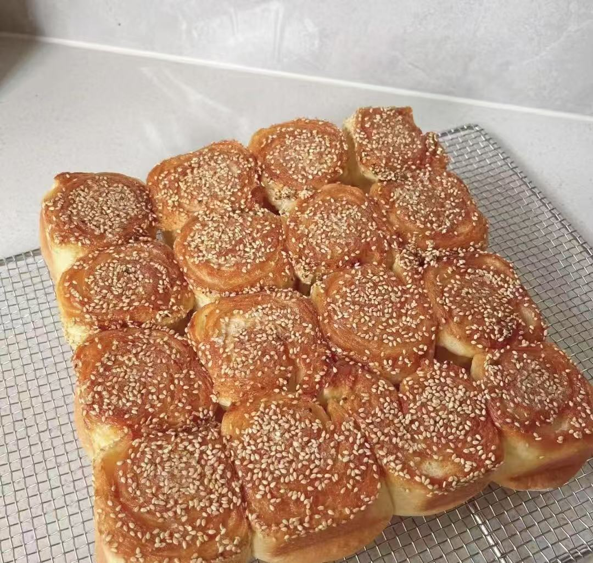
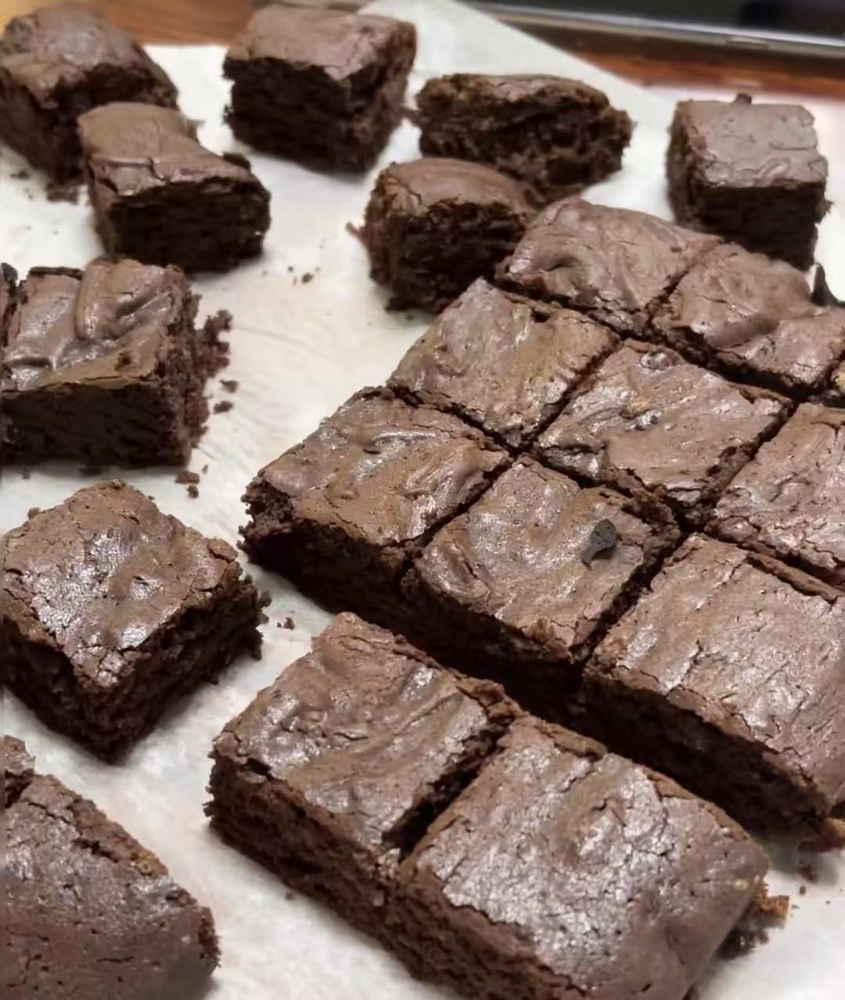
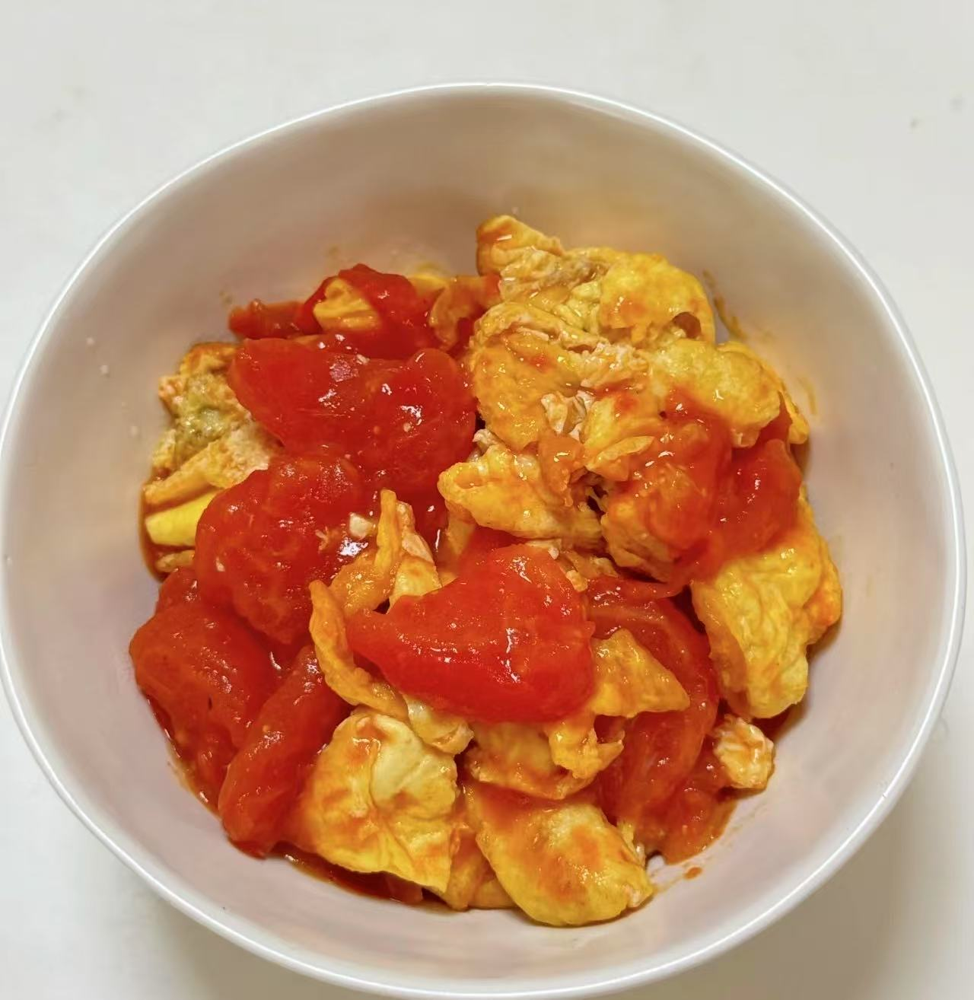
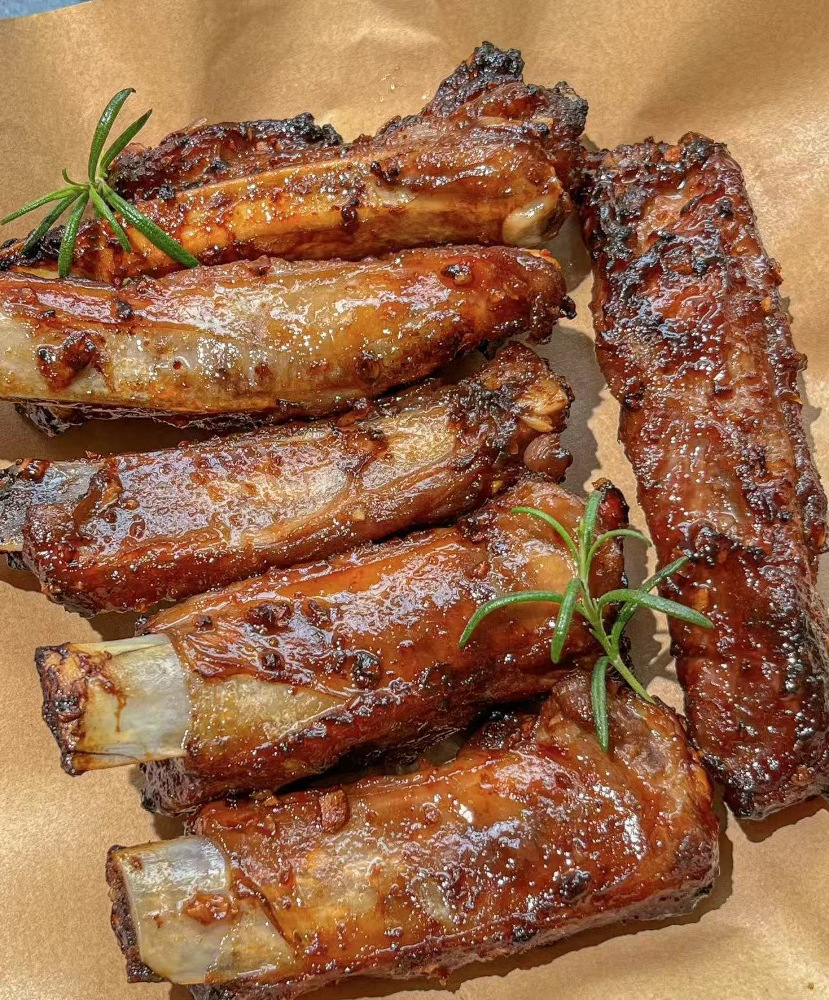
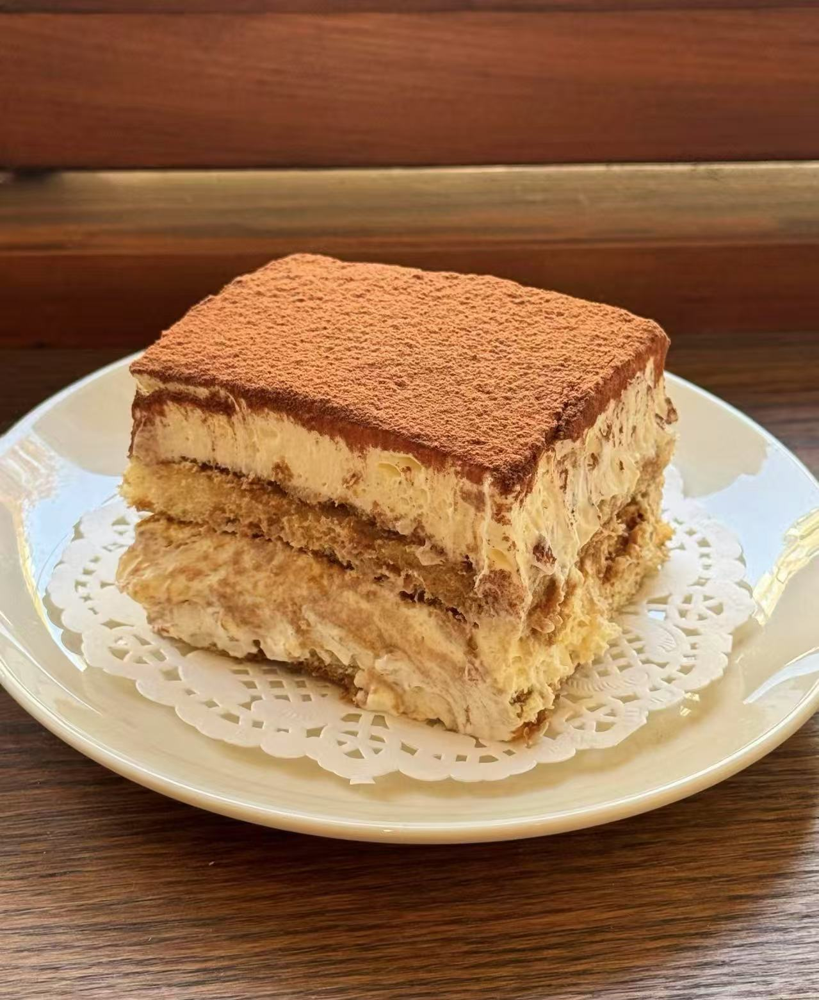
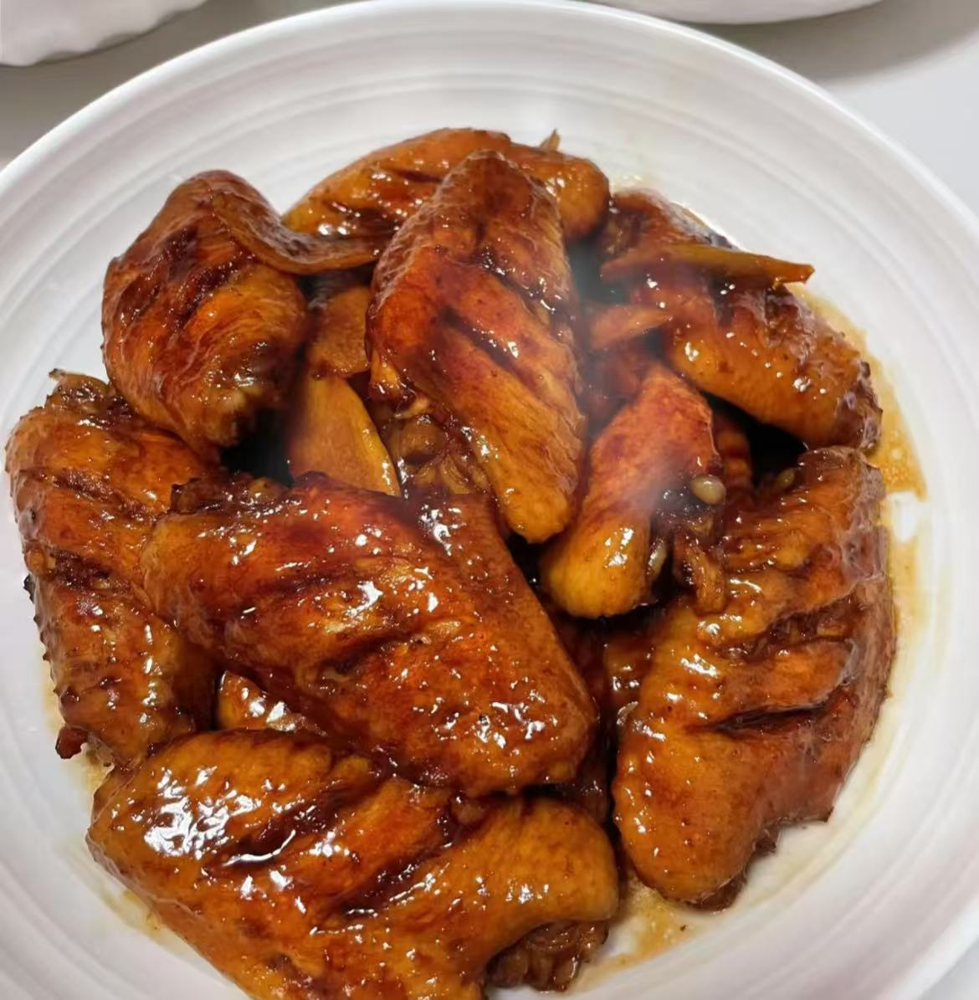

My Cooking Journey Will Take You Into The World Of Gourmet Food
Every dish is an expression of my love for cooking
Join My Food World!About Me
I am introducing my specialty here, which is cooking. I hope you can understand my specialty. I will introduce the dishes I have cooked and share my cooking experience.
I have loved and been passionate about cooking since I was a child. Over time, I not only learned basic cooking techniques but also began to explore a variety of different cuisines. Cooking is not only about satisfying the desire for food but also a process of creation. The sense of accomplishment I feel every time I share my culinary creations with family and friends is indescribable.
My Story

My Cuisine
-

Honey & Lemon Cake
I was mixing the batter while listening to my favorite music and feeling very happy. Next, it occurred to me that I could add some nuts to round out the dish. So, I took the chopped walnuts and added them to the batter. This makes me look forward to the final product.
-

Brownie
I was in the middle of making brownies when I realized I didn’t have enough eggs in the fridge. I had planned to use three eggs but could only find two! This year, I had a flash of inspiration and remembered that a friend once told me to replace eggs with bananas. So, I pulled out a cooked one, mashed it into a paste, and added it to the batter. Not only does this solve the problem, it also adds a unique banana flavor to the brownies.
-

Egg With Tomatoes
When I was beating the eggs, I was in a hurry and the eggshell fell into the bowl. I stopped, thinking about the method my mother taught me, and quickly scooped out the shell with chopsticks. This little accident made me cautious.
-

Honey Pork Ribs
When cooking the ribs, I was attracted by the aroma in the kitchen and forgot the time, and almost let the ribs burn! Fortunately, I discovered it in time and quickly turned down the fire. This made me sigh at the patience and concentration required in cooking, and not being impatient. This little episode also reminded me of what my mother needed to say: “In the kitchen, focus is the most important thing.”
-

Tiramisu
The inspiration for making tiramisu this time came from a trip. I remember having their tiramisu in a small town in Italy that used honey and vanilla and I was very impressed. After I got home, I kept thinking about how to incorporate this element into my favorite tiramisu, and this time I finally made it happen.
-

Cola Chicken Wings
When I decided to make cola chicken wings, a scene of gathering with friends came to my mind. I remember one time when we had a family gathering, the cola chicken wings brought by a friend were praised by everyone. The combination of sweet and salty taste makes you want to take another bite. This time I decided to do it myself.
Cooking Tips
For example, in the process of cooking cola chicken wings, I deeply realized the importance of marinating. Letting the ingredients marinate in advance not only enhances the flavor, but also gives the whole dish a layered feel.
In cola chicken wings, the sweetness comes from the cola, and the saltiness comes from the marinade. Such a combination allows the flavors to complement each other, and considering how to balance sweet and salty when seasoning can make the dish more appealing.
Learning online and watching cooking instructional videos helps me learn new techniques and recipes. These resources allow me to improve my cooking skills anytime and anywhere.
When making tomato scrambled eggs and tiramisu, color matching can enhance the visual appeal of the dish. In scrambled eggs with tomatoes, the bright red tomatoes and golden eggs complement each other, while the verdant green of onions adds a freshness to the whole dish.
In tiramisu, the white color of mascarpone cheese and the dark brown color of coffee form layers, while the sprinkled cocoa powder provides contrast, making the dessert more eye-catching. This color combination not only makes the main dishes and desserts look delicious, but also makes the table present a colorful visual effect, enhancing the overall dining experience!
Using fresh organic eggs in brownies can improve the quality of baking and make the finished product more fluffy. Add fresh fruits like strawberries or blueberries to tiramisu
Food Reviews
-
This dish has so much flavor and is seasoned just right!
Every bite is a surprise, so delicious! -
The presentation is beautiful and the color combination is mouth-watering!
The food looked very fresh and I couldn't help but try it. -
The combination of this dish is very unique and gave me a whole new taste experience.
Your creativity really amazes me, I have never seen such a combination! -
The texture is really good, chewy yet soft, perfect!
This dish has a lot of layers and is fun to eat. -
As soon as I opened the door, I could smell the delicious aroma, which made me salivate!
The aroma of this dish is so intoxicating that I can't help but want to smell it a few more times.